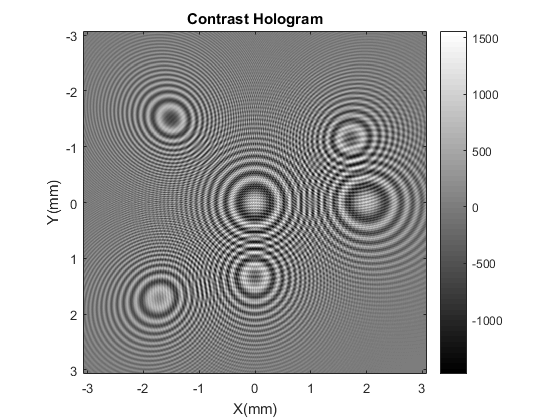

Contents
clear, clc, close all
General parameters definition
M = 1024;
lambda = 405e-9;
k = 2*pi/lambda;
zs = 5e-3;
zo = 100e-6;
dxs = 6e-6;
dxo = (dxs*zo)/zs;
Ls = dxs*M;
Lo = dxo*M;
xs = linspace(-Ls/2+dxs/2,Ls/2-dxs/2,M);
xo = linspace(-Lo/2+dxo/2,Lo/2-dxo/2,M);
[Xs,Ys] = meshgrid(xs,xs);
Object parameters definition
Ao = 1;
As = 0.01*ones(1,6);
xp = 1e-6*[40,0,0,-60,60,-60];
yp = 1e-6*[0,0,40,60,-40,-60];
zp = 1e-6*[100,100,150,175,175,200];
sigma = 1e-3;
SourcePhase = exp((1i*k*sqrt(Xs.^2+Ys.^2+zs.^2)))./sqrt(Xs.^2+Ys.^2+zs.^2);
ObjS = zeros(size(Xs,1),size(Xs,2), length(xp));
Propagation calculation
for p = 1:length(xp)
xpp = xp(p)*zs/zp(p);
ypp = yp(p)*zs/zp(p);
Modulacion = exp(-((Xs-xpp).^2+(Ys-ypp).^2)/(2*sigma.^2));
Ass = As(p)*Modulacion;
ObjS(:,:,p) = Ass.*(exp(1i*k*sqrt((Xs-xp(p)).^2+(Ys-yp(p)).^2+(zs-zp(p)).^2))./sqrt((Xs-xp(p)).^2+(Ys-yp(p)).^2+(zs-zp(p)).^2));
end
Sum of different holograms, one per point
Holo = SourcePhase;
for p = 1:length(xp)
Holo = Holo+ObjS(:,:,p);
end
Calculus of Contrast Hologram
HoloI = Holo.*conj(Holo);
SourceHolo = SourcePhase.*conj(SourcePhase);
HoloCont = HoloI-SourceHolo;
Plot
figure,imagesc(xs*1e3,xs*1e3,HoloCont),
colormap gray, axis square, xlabel('X(mm)'), ylabel('Y(mm)'),title('Contrast Hologram')
set(gcf,'color','w');
colorbar
